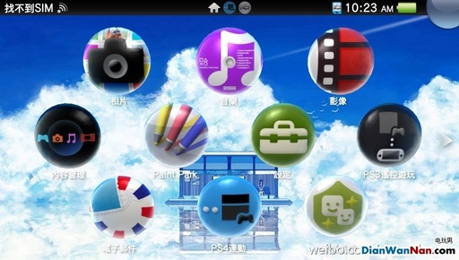
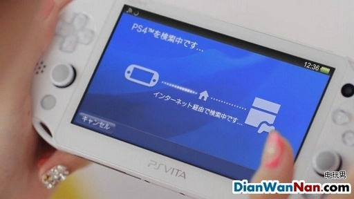

PSV与PS4都须有相同的SEN账户,当然之前建立的是可以沿用的,无需为PS4再新建,可直接连接wifi时,进入PS4设定菜单,PSV连线设定 直接与PSV连线,在PSV点击,PS4连动的图标启动,遥控游玩或第二荧幕操作PS4,选择设定菜单,PSV连线设定,登陆装置,画面上会显示编号,将PS4上的数字输入PSV,再选择登陆,即可遥控游玩。

登录多台装置时，会出现选择PS4的界面，当使用其他应用程式超过1分钟后会自动切断与PS4的连接具体仍有无法连接的，请确保是否正确的连接以及网路环境的稳定与否，且可参阅PSV自带的说明。
评论